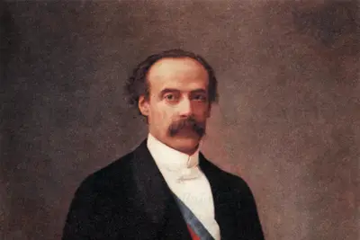
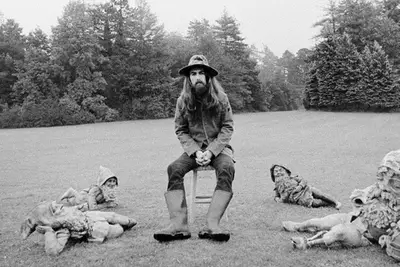
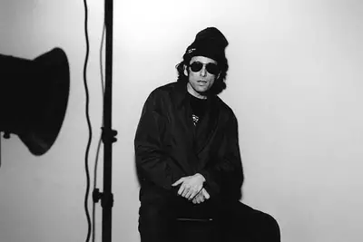
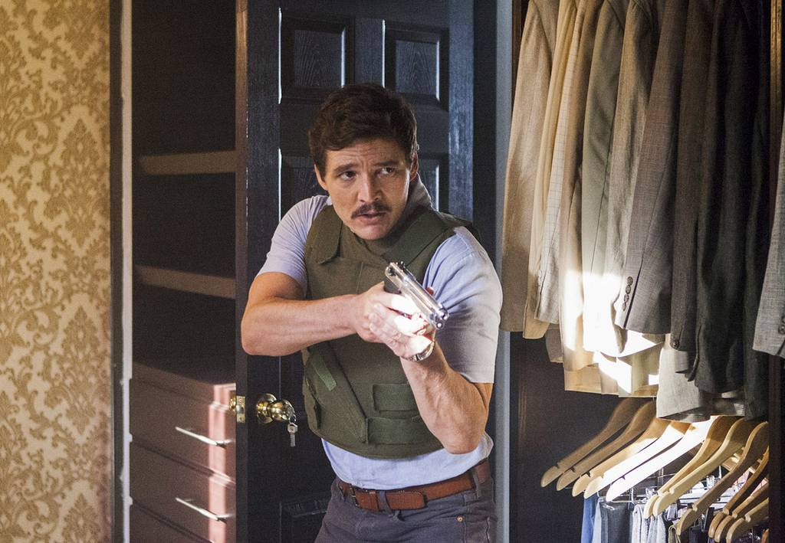
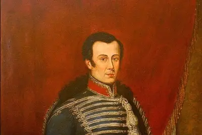
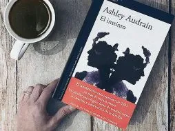

Books Movies Art History
Books Movies Art History 

Books, trains and Lions: History of the Controversial Chilean occupation
Of Lima in January 1881-140 years ago-, the Chilean Army occupied the capital of Peru in order to put anendto the pacific War and achivie the long-awaited cession of the rich saltpeter regions.Upon arrival, the drops found a city shaken by excesses and had to take care of domestic affairs. The Chilean presence to this dayis the subject of debate: for some there was looting, others point out that spoils of wae were taken. Chilean and Peruvian historians summoned by Culto deal with the subject and ilustrate the points to take intoaccount in still open discussion
Manuel Canales and his thesis of the social outbreak: "Jorge Gonzales changed the epic and aesthetics of the old popular form"
Interviewed about the book Saltae el toumiquet (FCE,2021), where he slips that the "FRAUD" of neoliberalism was the "proprallant"
of the Chilean Social outbreak, the sociologist and acaemic from the University of Chile thiks that the voice of Los Prisioneros "installs the sociological thesis of Latin America in the last forty years"
An escape from film, avant-garde and Creationism: Vicente Huidobro, when creatinng is everything.
He is the one of the capital names of Chilean poetry, and in the opinion of connoisseurs, his literature-between poetry and prose-presents sevreal features that made him dialogue with the art and the advanced trends of his time. He even maneged to patent a movement of disputed origin, where he advocated cretion without resorting to imitation. In Cult we analyze his writing, aesthetics and political activity.
Cult of Selection
When Chile split in two: Balmacedasaltpeter and the outbreak of the Civil War os 1891.
Carmel: the miniserie of the moment on Netflix that recovers little-knows details of an upper-class crime.
From cassette to playlist: catching success.
George Harrison and the recording of All the things must pass: the introspective path to transcendence.
spitting songs (and merch): Calamaro swwiming the waters of El Salmon.
Pedro Pascal in the streaming: where to see the Chilean of the the moment in Hollywood.
The unknown vaccine of Jose Miguel Carrera: the campaing to inmunize Chile against smallpox in 1812.
Ashley Audrian flows with her Literary Instinct.